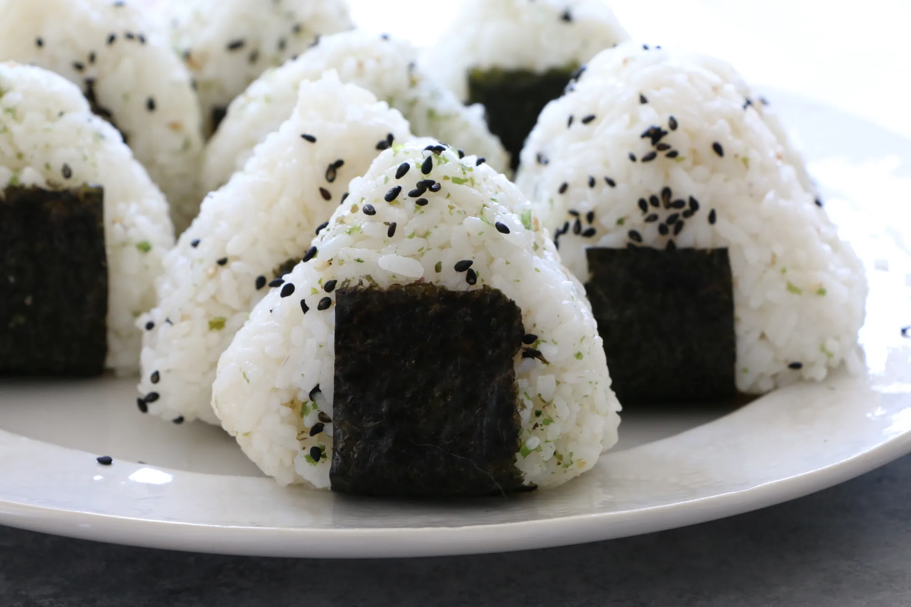

Your belt is having a hard time keeping your dad-bod in? (Ah, haven't we all been there.) This recipe is the answer to your problems, and the secret your wife's lover doesn't want you to know!
Unlike most salaryman' cuisine, the ball of rice is an exceptionally low caloric meal. How many calories? Well, scientist haven't been able to tell—but those that have continuously eaten it for one month straight have lost considerable weight (and the will to live)!